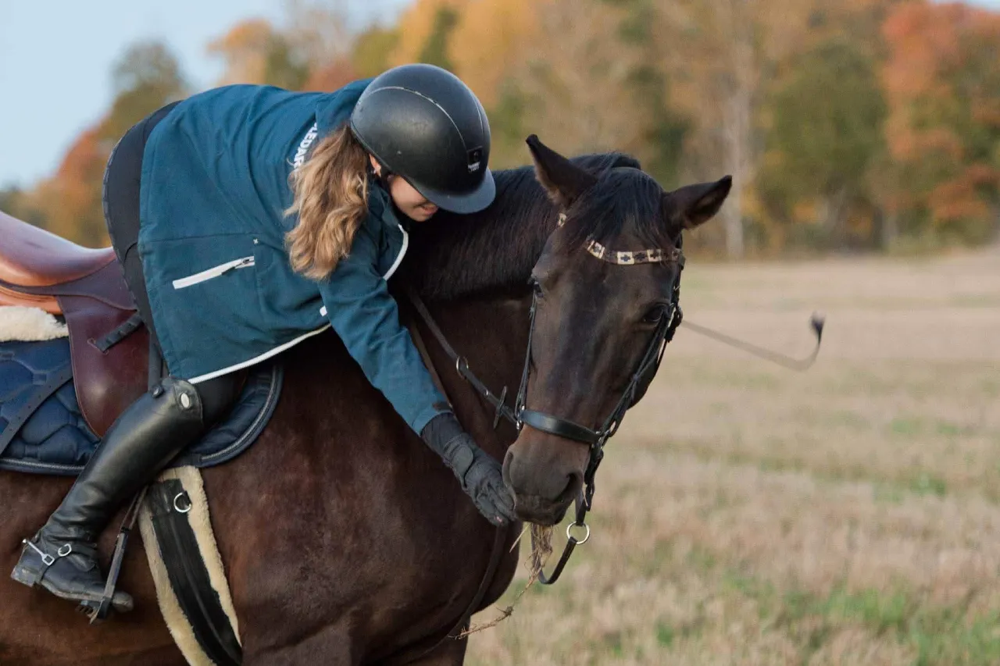
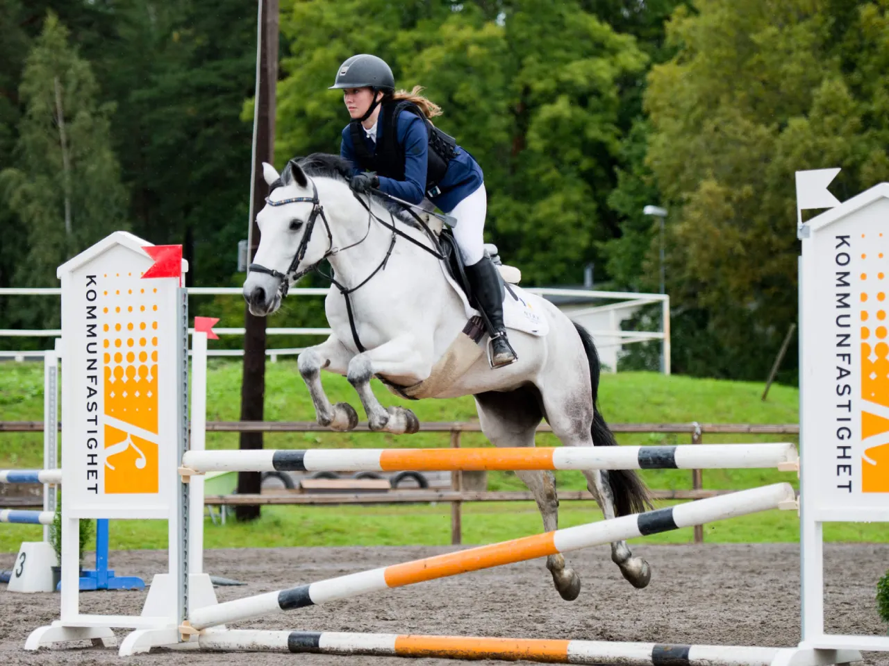

Min Hobby
Ridsport
Under 2025 hade svenska ridsportsförbundet 138 000 enskilda medlemmar och 786 medlemsföreningar
vilket ledde
till fritid och tävling för en halv miljon svenskar. Ridningen har alltid varit en del av mitt liv
så länge jag kan minnas.
Hoppning har alltid varit det absolut roligaste att tävla och träna på
men jag har också testat på andra grenar så som working
equitation, fälttävlan och såklart dressyr.
Svenska ridsportsförbundet räknar tio tävlingsgrenar som officiella inom ridsporten. Dessa är:
- Hoppning
- Dressyr
- Fälttävlan
- Sportkörning
- Voltige
- Working Equitation
- Distansritt
- Mounted Games
- Reining
- Parasport

Dessa grenar skiljer sig åt i vilken utrustning som är ett krav, hur grenen bedöms och vilka tävlingar som hålls.
Nedanför finns en tabell som enkelt förklarar vissa skillnader.
| Gren | Utrustning | Bedömning | OS-Sport |
|---|---|---|---|
| Hoppning | Säkerhetsväst upp till 18 år och Hjälm | Tid och felpoäng | Ja |
| Dressyr | Kandar och Kavaj | Procent 0-100% | Ja |
| Fälttävlan | Säkerhetsväst och Terrängskydd | Procent, Felpoäng och Straffpoäng | Ja |
| Voltige | Voltigegjord och Kroppsnära kläder | Skala 0-10, Teknik och Artistiskt utförande | Nej |
Läs mer om ridsporten här:
Svenska Ridsportsförbundet